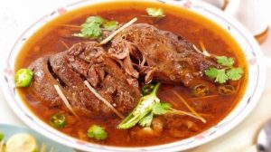

Nihari

What is Nihari?
Nihari is a popular and flavorful slow-cooked meat stew originated in the Indian subcontinent. It is made
typically with lamb or beef. The dish is prepared by simmering meat, bone marrow and various aromatic spices for
several hours. The slow-cooking process allows the meat to become tender and infuses the flavors of the spices
into the dish.
Ingredients:
- 500 grams of beef or lamb (preferably shank or stewing cuts)
- 2-3 tablespoons of ghee (clarified butter)
- 2 medium-sized onions, finely sliced
- 4 cloves of garlic, minced
- 2-inch piece of ginger, grated or finely chopped
- 2 tablespoons of wheat flour or gram flour (besan)
- 2 teaspoons of red chili powder (adjust according to your spice preference)
- 1 teaspoon of turmeric powder
- 1 teaspoon of coriander powder
- 1 teaspoon of cumin powder
- 1/2 teaspoon of nutmeg powder
- 1/2 teaspoon of mace powder
- Salt to taste
- 4-5 cups of water or beef/lamb broth
- 2-3 tablespoons of bone marrow (optional, but adds richness to the dish)
- For garnish: fried onions, chopped ginger, fresh coriander leaves, lemon wedges
Cooking Instructions:
- Heat ghee in a pot or pressure cooker.
- Sauté sliced onions until golden brown.
- Add minced garlic and grated ginger, sauté for a minute.
- Mix wheat flour/gram flour with water to make a paste, add it to the pot, and cook for a couple of minutes.
- Reduce heat, add meat, and coat it with the onion and spice mixture.
- Add red chili powder, turmeric powder, coriander powder, cumin powder, nutmeg powder, mace powder, and salt. Mix well.
- Pour in water/broth, ensuring the meat is submerged.
- Pressure cooker: Cook for 30-40 minutes on high pressure. Pot: Simmer on low heat for 3-4 hours, stirring occasionally.
- Add bone marrow (optional) in the last 30 minutes of cooking.
- Adjust gravy consistency by simmering or adding water/broth.
- Taste and adjust seasoning.
- Serve hot, garnished with fried onions, chopped ginger, fresh coriander leaves, and lemon juice.
- Enjoy with naan bread or rice.
Home